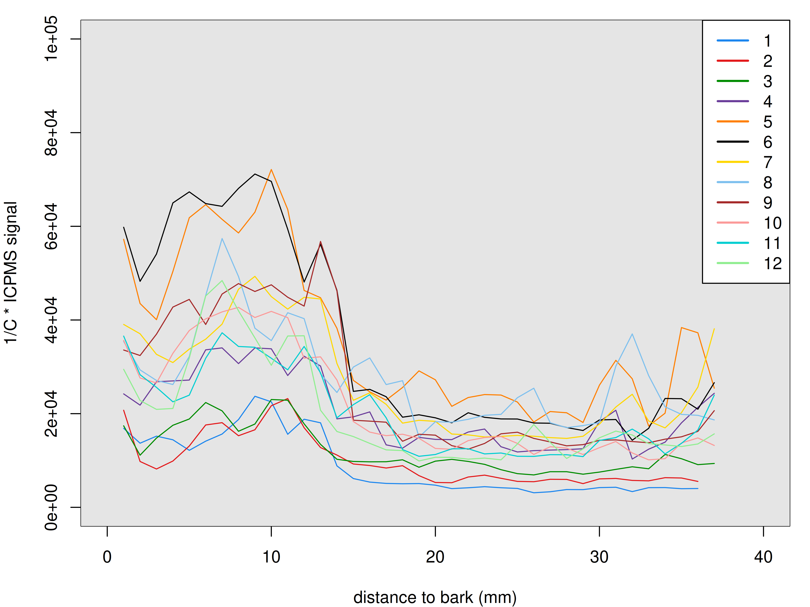
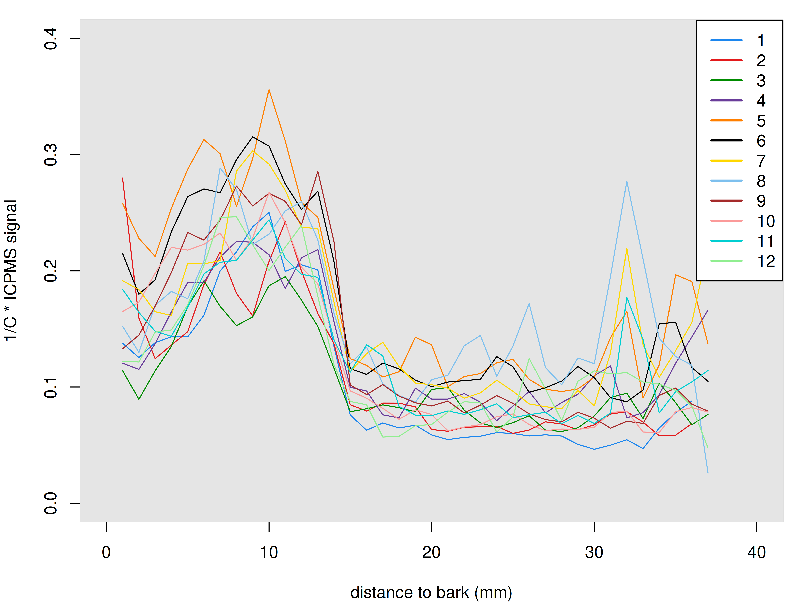
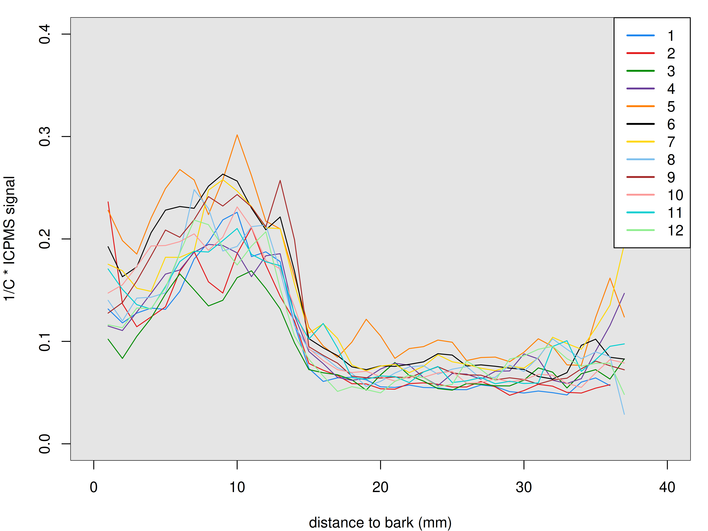
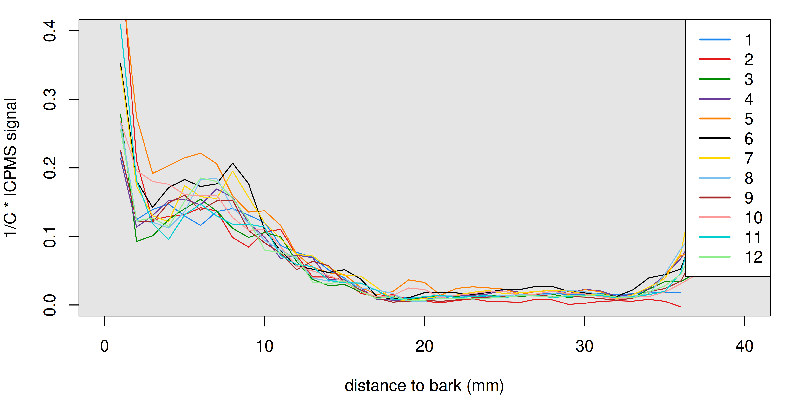
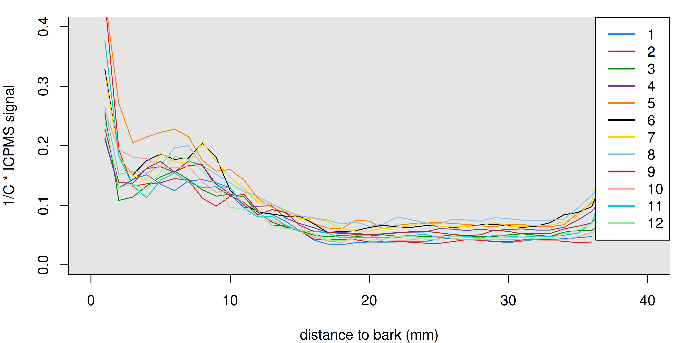
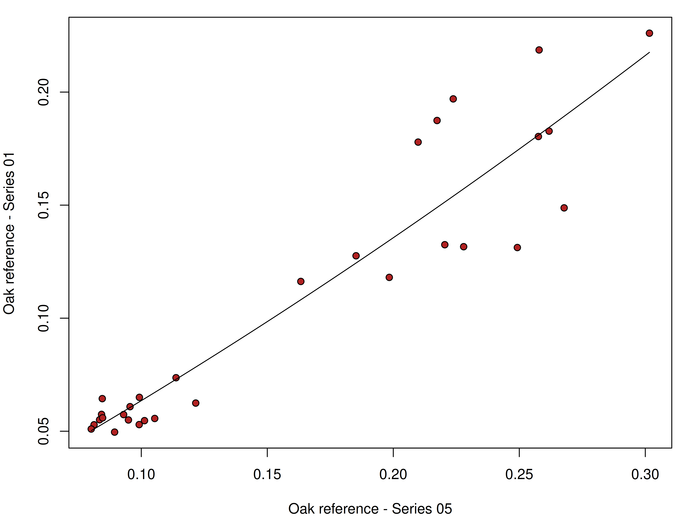
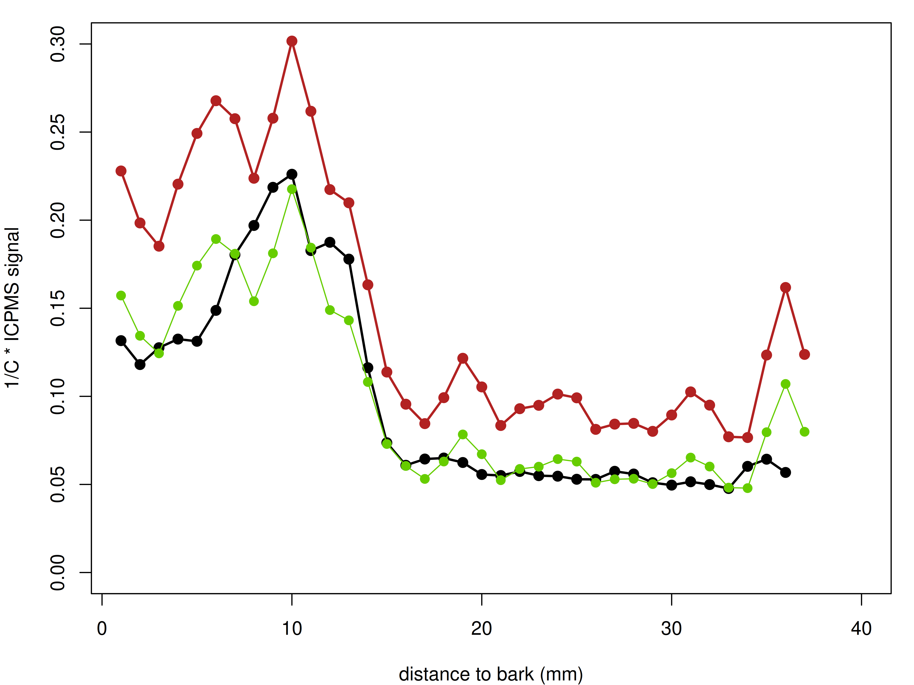
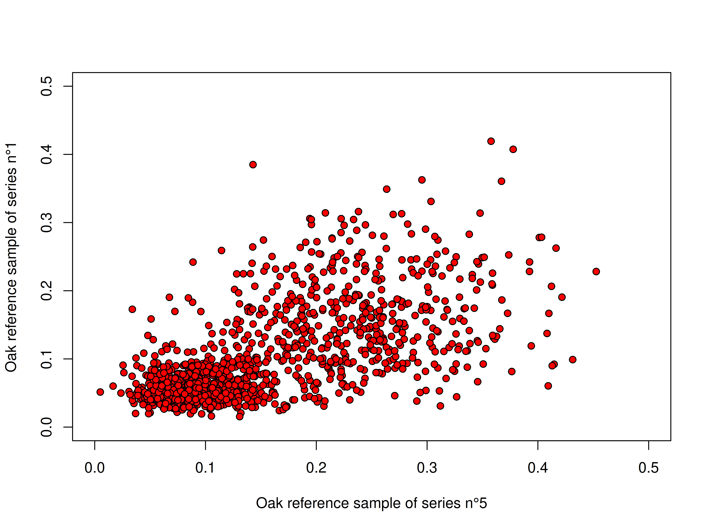
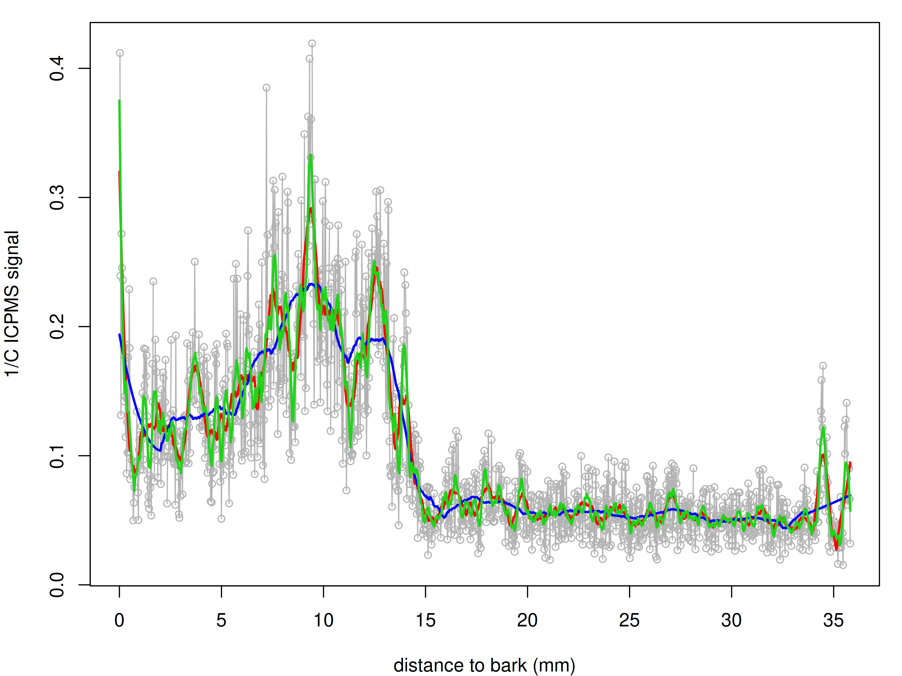

4 LA-ICPMS inter-series variability
4.1 Quantifying the amount if variation between sample series
The 100 wood core samples of the SoilWood project were not analysed in one single analysis run. The 100 samples were analysed in 12 different series. These different series were analysed at different dates with between series the ICPMS being shut down. This means that the instrument conditions at each series of samples were not the same and these different conditions can lead to variations in ICPMS elemental signals. In this section, I investigate the amount of variation that may occur between sample series runs due to variations in ICPMS instrument sensitivity and detector response from one day to the next. To assess and quantify this inter-series variation, a reference Oak wood core was analysed in each of the 12 sample series.
The initial intuition to process the LA-ICPMS data in order to minimise variations between sample series was to first correct all elemental signals for the baseline signal (i.e. the ICPMS signal measured between ablation events when only He gas is sent to the plasma). Second, all baseline corrected signal are standardised by the C-13 signal to obtain elemental ratios such as K/C for example. Standardising the elemental signals with the C-13 ratio drastically decreases the inter-series variability as shown by comparing Figure 4.1 and Figure 4.2.

Figure 4.1 shows the inter-series variability for the raw signal (i.e. signal corrected for the baseline but not standardised by the C signal). This graph clearly shows a pronounced variability of the K signal from one series to the next. This is not surprising because ICPMS sensitivity can change from one day to the next depending on instrument optimisation. The signal level also increases and decreases following the order of the series:
Standardising the signal with the C-13 signal (Figure 4.2) lower inter-series variability but the variability remains non negligible. I ran a check comparing the K/C signal for samples in series 1 and 5 (samples other than the Oak reference sample) and the offset between these two series was also observable (data not shown) which strongly suggests that it is due to inter-series variability and not simply random error when measuring the oak reference wood core.
After this, I tried looking at elemental signals standardized to the C-13 signal but without subtracting the baseline. This data processing decreased significantly the inter-series variability for certain elements like Mg or K as shown in Figure 4.3. The inter-series variability is very low in the heartwood for all series except Series 5. Given the variability observed for the non-C13-standardised data (Figure 4.1), it is likely that the slope of the detector’s response to increasing K concentrations changes from one series to the other.

I also looked at the variability for elemental signals with no baseline correction standardised with a baseline-corrected C13 signal. The results were somewhat similar to Figure 4.3 but the amount of variance was sligntly higher.
However, for other elements such as phosphorus, variability between series was lowest when considering the baseline-corrected data as shown in Figure 4.4.


Even when using the baseline-corrected data (like in the case of phosphorus), a certain amount of variability between series is observed for the higher values which (just like K) is probably explained by different slope values for the ICPMS detector’s response to increasing P concentrations.
The different behaviors reported here are likely explained by the signal to baseline ratio. In Table 4.1
| element | baseline correction | median signal to baseline |
|---|---|---|
| Na | YES | 4.80 |
| Mg | NO | 63.00 |
| Al | NO | 1.07 |
| Si | YES | 3.70 |
| P | YES | 4.98 |
| K | NO | 10.95 |
| Ca | YES | 4.32 |
| Ti | NO | 1.04 |
| Mn | NO | 91.00 |
| Fe | YES | 1.90 |
| Cu | NO | 9.92 |
| Zn | YES | 1.50 |
| Ga | NO | 22.00 |
| Rb | NO | 20.89 |
| Sr | NO | 178.00 |
| Ba | NO | 209.00 |
| Pb | NO | 7.70 |
ImportantConclusion
- Inter-series variability does not seem to be simply ramdom errors but due to instrumental drift over the different analysis days.
- The LA-ICPMS processing method (baseline correction or not) needs to be adapted to each individual element
- A correction equation needs to be established to further reduce inter-series variance.
4.2 Data correction methodology
nomenclature
- Each series of samples is composed of several wood core samples originating from the CASIMODO or RENECOFOR sites (1 to 10 wood core samples) and an oak reference wood core sample (same sample analyzed in each of the 12 series of samples).
- For standardisation purposes, one of the 12 series of samples will be considered as the reference series. The concentration profiles measured for the oak reference of this reference series will be considered as the reference (hereafter names reference series) in order to standardise all the other measured concentration profiles in the other series (these other series will be hereafter names standardised series).
Biases due to differences in ICPMS detector response to elemental concentrations can be reduced by standardising all sample sample series data to one reference series. This standardisation procedure is carried out by modelling the elemental signal measured for the Oak reference wood core in the reference sample series as a function of the elemental signal measured for the Oak reference wood core in any other of the 11 series. Figure 4.5 shows the type of relationship between the two datasets. While close to linear a best fit is obtained with a second degree polynomial regression. The following example was obtained by comparing the oak reference in series n°1 (AUD) and n°5 (SAM). The oak reference sample data in this example were smoothed by calculating a mean data point every millimeter (to reduce local variability and highlight main trends).


Special care must be taken when fitting polynomial regression models because polynomial regressions can generate models with a bell-shaped curve which would cause a bias when standardising the data to the reference series. To overcome this issue, I used the R library limSolve which enables to constrain the polynomial model to remain monotonous over a user defined range. In this case, the range needs to be defined not just from the minimum and maximum measured data in the oak reference wood cores but from the minimum and maximumu values measured for a given element in the entire sample series.
Smoothing the data is a necessary step. Figure 4.6 shows the scatterplot between the two oak reference of series n°1 and n°5 including all measured data points (no smoothing). This figure shows that the local variability at a 25µm resolution is too high to reasonnably fit a model between both series. Smoothing the oak reference sample data is necessary.

A more interesting way of smoothing the laser-ablation data is to use a Savitzky-Golay filter from the signal R library. The Savitzky-Golay algorithm fits local low-degree polynomials to the data using least squares. It smooths out high-frequency noise while preserving peak heights and widths. The filter can be parametrised using the polynome degree and the integration windows size parameters.

ImportantSoilWood data correction protocol
- Selection of a reference series to which all other series will be standardised. I selected a sample series for which the standatdised data had an average behaviour for the oak reference wood core: i.e. average concentration profile compared to the other series. This led to selecting series n°10 (Renecofor CHS 57B).
- For each series (other than the reference series), determine the min and maximum measured ICPMS signal for each element (expressed in 1/C ICPMS signal)
- Smooth the laser ablation data of the oak reference samples for both the reference series and the standardised series using a Savitzky-Golay filter with parameters set to
p = 2(second degree polynome) andn=161(integration over 4 mm - 2mm left and write). - Fit a polynomial model (one model per element) predicting the smoothed oak reference data in the reference series from the standardised series constraining the model to be monotonous over the range defined by the minimum and maximum values determines in step 2
- From the estimated polynome parameters, correct all the LA-ICPMS data for the series for each element